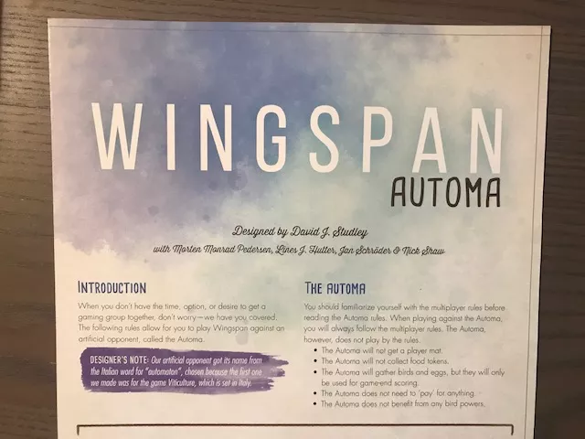
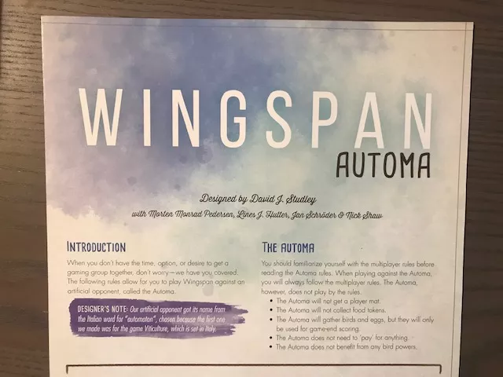

WINGSPAN
Attract a beautiful and diverse collection of birds to your aviary.
 

Game Information
- 1-5 Players
- Genre: Family, Strategy
- Game Type: Card
Wingspan is a competitive, medium-weight, card-driven, engine-building board game from Stonemaier Games. It's designed by Elizabeth Hargrave and features
over 170 birds illustrated by Beth Sobel, Natalia Rojas, and Ana Maria Martinez.
You are bird enthusiasts—researchers, bird watchers, ornithologists, and collectors—seeking to discover and attract the best birds to your network of wildlife preserves.
Each bird extends a chain of powerful combinations in one of your habitats (actions). These habitats focus on several key aspects of growth:
- Gain food tokens via custom dice in a birdfeeder dice tower
- Lay eggs using egg miniatures in a variety of colors
- Draw from hundreds of unique bird cards and play them
The winner is the player with the most points after 4 rounds.
Review
All around, this game is fantastic.
Tom Vasel, Wingspan Review - with Tom Vasel, YouTube.
Publishing Information
- Publisher: Stonemaier Games
- Released: 2019